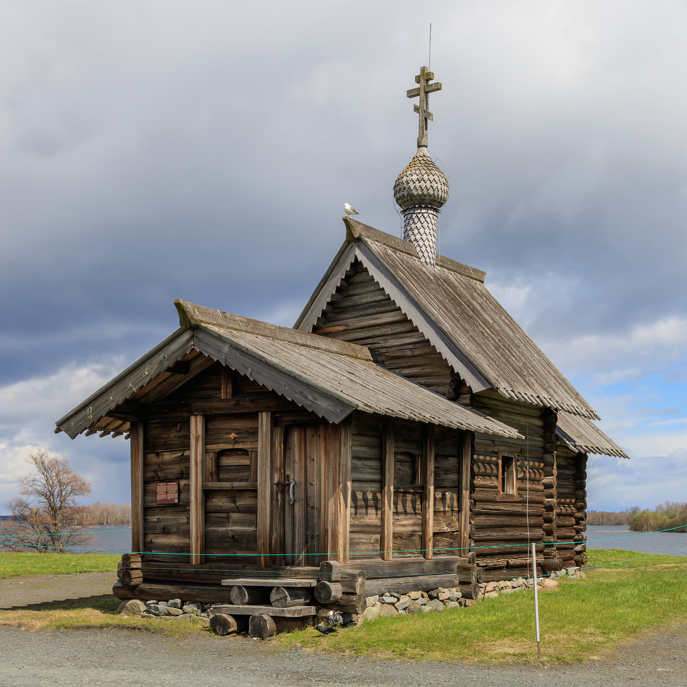
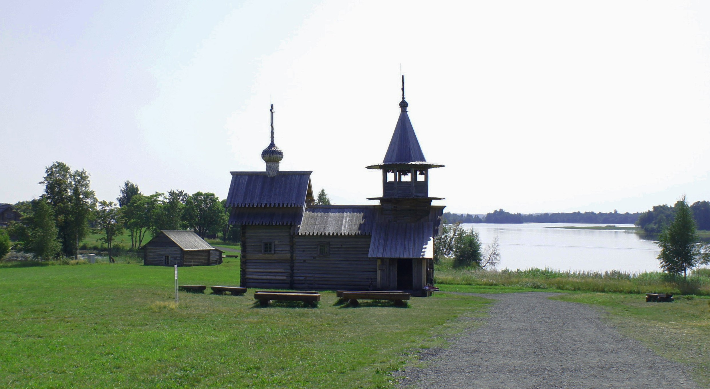
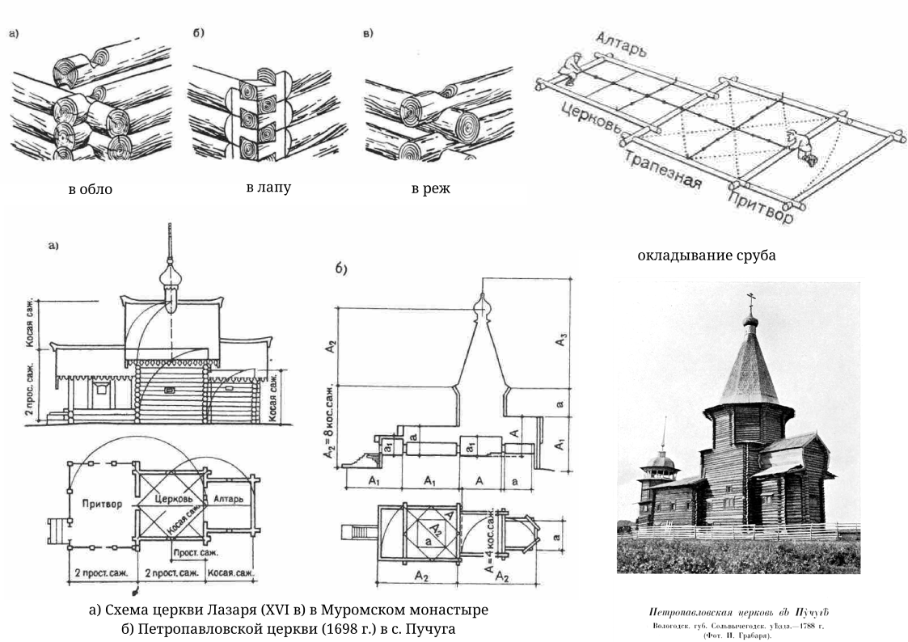
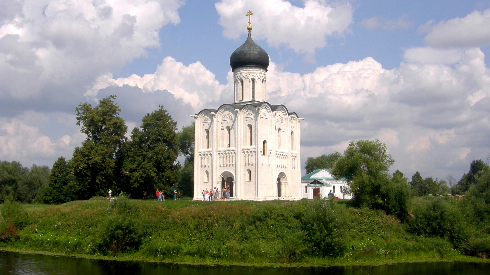
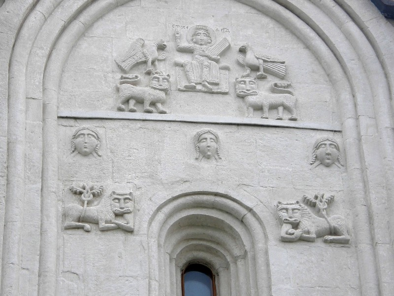
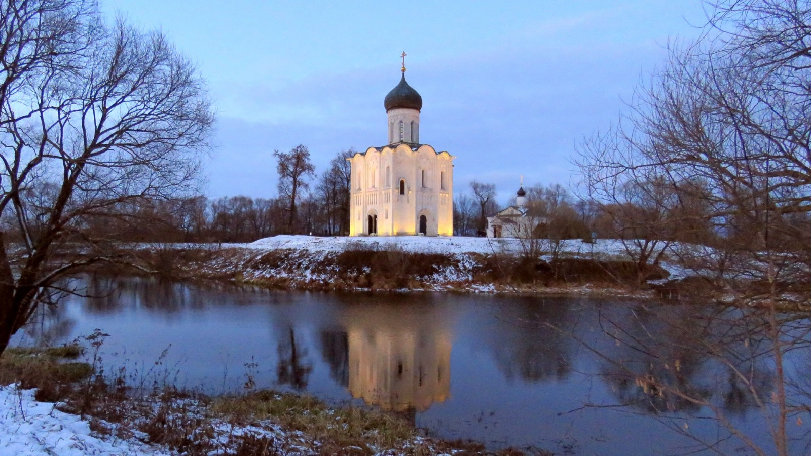

Апсида (=абсида)
Примыкающий к основному объему здания пониженный выступ полукруглой, граненой либо сложной формы в плане; этим термином почти всегда обозначаются лишь алтарные объемы.

рис. 1 Церковь Воскрешения св. Лазаря на острове Кижи, Республика Карелия (Россия). XIV век (по преданию)
Фотограф А.Савин, Википедия, 2017.
Леса, строительный материал для деревянных построек, покрывали большую часть земель Киевской Руси и все земли Великого Новгорода, Владимиро-Суздальского, Тверского и Московского княжеств. Это предопределило главенствующую роль дерева в зодчестве Древней Руси: первые постройки такого типа появились задолго до каменных и кирпичных. Дерево было легко обрабатываемо и доступно самым широким слоям населения Руси, и сохранило свой статус основного строительного материала вплоть до XVIII в.

рис. 2 Часовня Михаила Архангела, из д. Леликозеро (Леликово). XVII век
Фотограф Александрова Елена, Википедия
Между тем, два качества дерева не позволяют заглянуть в древнейшие периоды развития русского деревянного зодчества: это горючесть и недолговечность. В современности не сохранилась ни одна деревянная постройка, срубленная ранее XVI в. Редкие жилые дома имеют возраст свыше 100 лет, храмы - свыше 300 лет.
В исследованиях источниками служат летописи, миниатюры, писцовые книги, иконы.
В строительстве наибольшее распространение получили хвойные породы: сосна, лиственница, ель. Их положительными качествами были прямизна и отстутствие дупел, это позволяло собирать из бревен стены, а смолистость пород обеспечивала хорошую сопротивляемость гниению. Кроме того, для разных нужд могли использоваться: прямослойный дуб (в южных районах), осина (для кровельного лемеха). Главным орудием производства русского плотника был топор и его разновидности.
Главая конструктивная форма в русском деревянном зодчестве - прямоугольный сруб, называемый четвериком, из горизонтально сложенных и притесанных друг к другу бревен. Их складывали горизонтально, т.к. при усхании вертикально врытых бревен между ними возникали щели.
В углах срубов бревна соединялись с помощью врубок. Чаще всего применялась врубка с остатком ("в обло"), реже - без остатка ("в лапу"). После пазы прокладывались мхом и конопатились паклей.
Разметка будущего здания происходила путем выкладывания нижнего венца сруба - "оклада".

рис. 3 По материалам книги "История русской архитектуры" Пилявского В. И., Тица А. А., Ю. С. Ушакова
Церковь Покрова на Нерли была выстроена в 1165 г. поблизости от Боголюбова, при впадении р. Нерли в Клязьму, на конечном пункте речного торгового пути, который вел на восток, на Волгу. Монастырская церковь на Нерли отмечала подъезд к Боголюбову и Владимиру, архитектурно выделяя въезд в столицу. Хорошо сохранившаяся церковь искажена только поздним луковичным куполом и полусферической кровлей вокруг барабана .
План церкви на Нерли повторяет планы собора в Переславле и церкви в Кидекше. При сравнении с собором в Переславле-Залесском особенно заметны сильно выраженные вертикальные пропорции, придающие ей замечательную легкость и воздушность. В древности здание было окружено монастырскими постройками. Удивительно изящное и стройное сооружение прекрасно гармонирует с живописным окружающим пейзажем. Это достигнуто также и тем, что усложнились наружное расчленение и архитектурная декорация стен, для которых характерны многоуступчатые лопатки, закомары, оконные и дверные проемы и большое количество колонок различных размеров.

Общая фотография церкви Покрова на Нерли. На заднем плане теплая Церковь трех святителей. Фото: Виктор Курков, 2011
Большие колонки, приставленные к наружным лопаткам, несли резные каменные водосточные сливы между закомарами; арочки фриза опираются на миниатюрные колонки, которые имеются в порталах, на барабане и на апсидах здания. Лопатки усложнены уступами прямо-угольного и закругленного профиля, что придает наружным стенам глубокий рельеф и насыщает их поверхности сочной пластикой.
Большую роль в композиции здания играют перспективные порталы, в которых богатая архитектурная декорация сочетается с величественной монументальностью.
Помещенные в полукругах закомар каменные рельефы, изображающие библейского царя Давида, играющего на музыкальном инструменте и окруженного слушающими его зверями, служат дополнительным средством усиления пластики стен. Эта наружная скульптурная декорация представляет собой одно из наиболее существенных новшеств в церковной архитектуре, которого нет ни в одной из местных школ русского зодчества того времени, исключением Галича, и которое впоследствии получило свое блестящее развитие в строительстве времени Всеволода за и его наследников. Рельефы уничтожают тяжесть стены, делают ее нарядной, воздушной и легкой.

Каменный рельф Церкви Покрова на Нерли. Фото: Виктор Курков, 2016
Сравнение архитектуры церкви Покрова на Нерли с современными им памятниками западноевропейской романской архитектуры наглядно обнаруживает превосходство высокого художественного мастерства владимирских памятников, обусловленное удивительно гармоническим равновесием архитектурных форм, глубоко отличных от сильных выразительных, но тяжеловесных и угловатых объемов романских зданий.

Церковь Покрова на Нерли. Фото: Виктор Курков, 2021
Источник: Плужников, Владимир Иванович. Термины российского архитектурного наследия : архитектурный словарь
Примыкающий к основному объему здания пониженный выступ полукруглой, граненой либо сложной формы в плане; этим термином почти всегда обозначаются лишь алтарные объемы.
Цилиндр или многогранник, завершающий объем здания и обычно увенчанный куполом либо главой.
Двускатное покрытие килевидного сечения, расширяющееся над основанием.
Восьмигранный архитектурный объем.
Купольное или многогранное покрытие барабана на культовой постройке.
Небольшая глава, обычно на шейке.
Полукруглое или килевидное завершение прясел церковного здания, примерно соответствующее кривизне закрываемого свода.
Сруб - деревянное сооружение без пола, перекрытий, лестниц, дверей, оконных рам, возведенное из горизонтальных брёвен или брусьев.
Крещеный с. имеет форму креста.
Верхний слой крыши.
1 Свод, поверхность которого образована вращением кривой вокруг вертикали.
2 Сфероидная эллипсоидная или граненая кровля, по силуэту близкая куполу (1).
Не имеющий базы и капители вертикальный ленточный выступ стены, разделяющий или ограничивающий ее поверхность.
Художественное обрамление входа.
Участок стены древнерусского каменного сооружения, ограниченный двумя лопатками, пилонами или башнями.
Крытая площадка наружной лестницы при древнерусском здании.
Наклонная поверхность кровли.
1 Средняя часть антаблемента.
2 Декоративно оформленная горизонтальная полоска.
Объем с прямоугольным планом (термин обычно относится к культовым постройкам).
Пирамидальное покрытие с крутыми скатами.
Сфера под крестом, венчающим храм, либо под металлическим прапором или силуэтной фигурой ангела, в завершении башни.